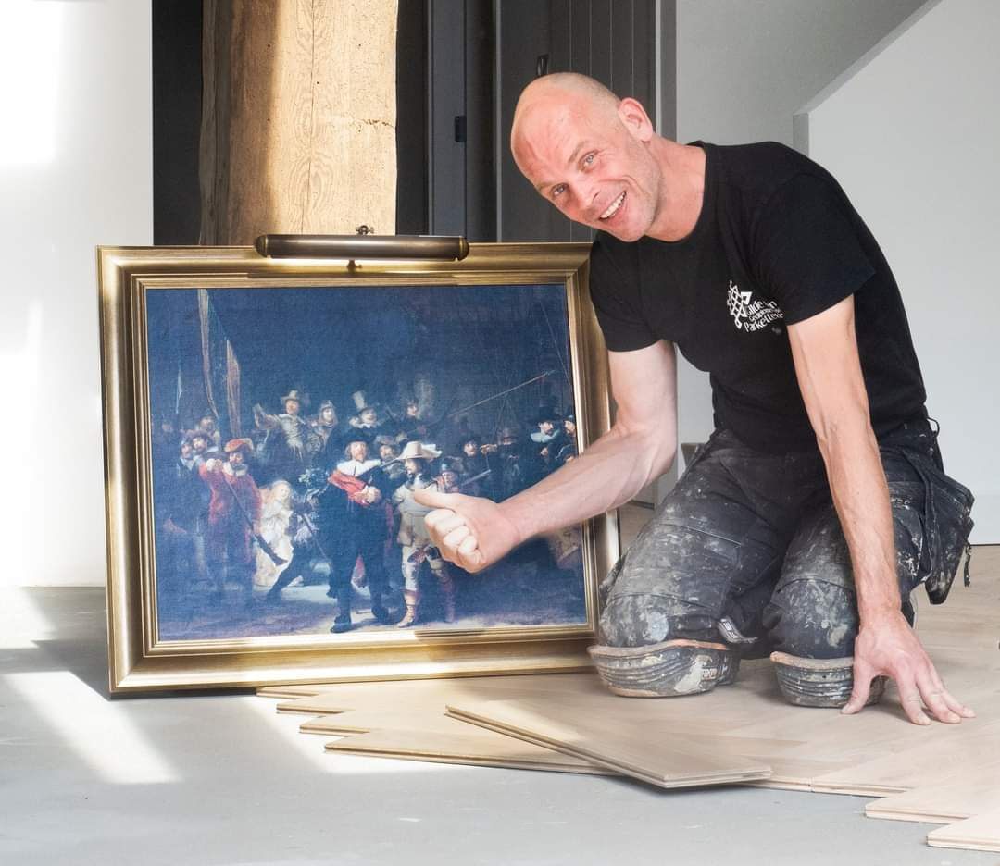
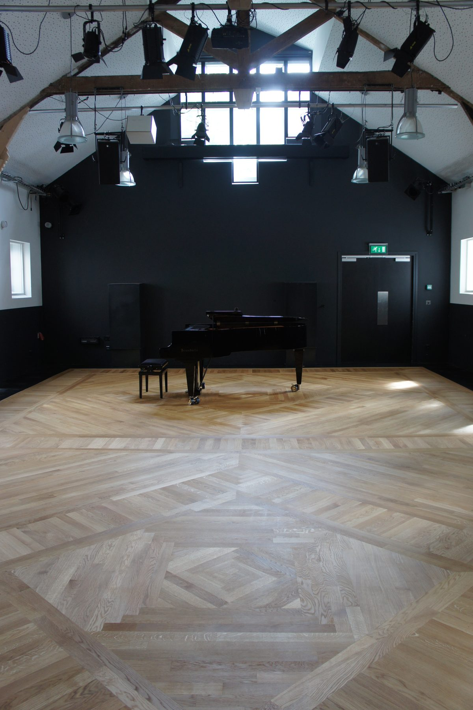
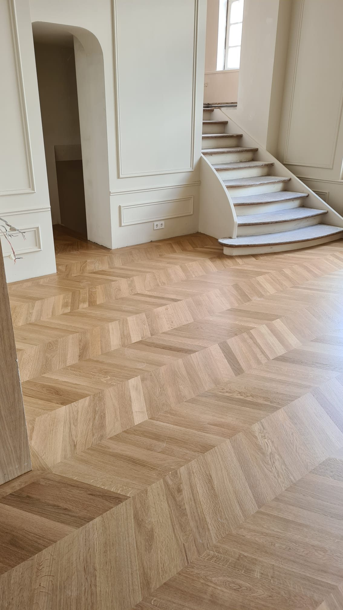
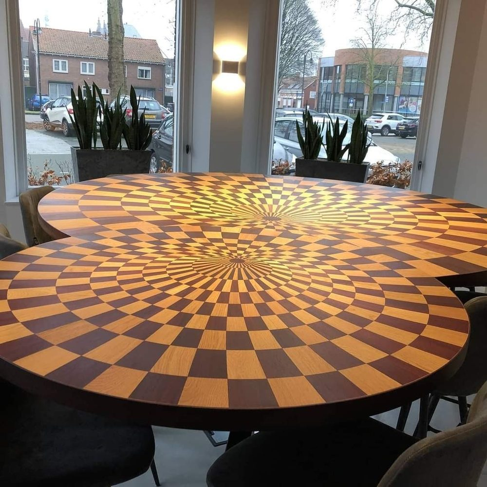
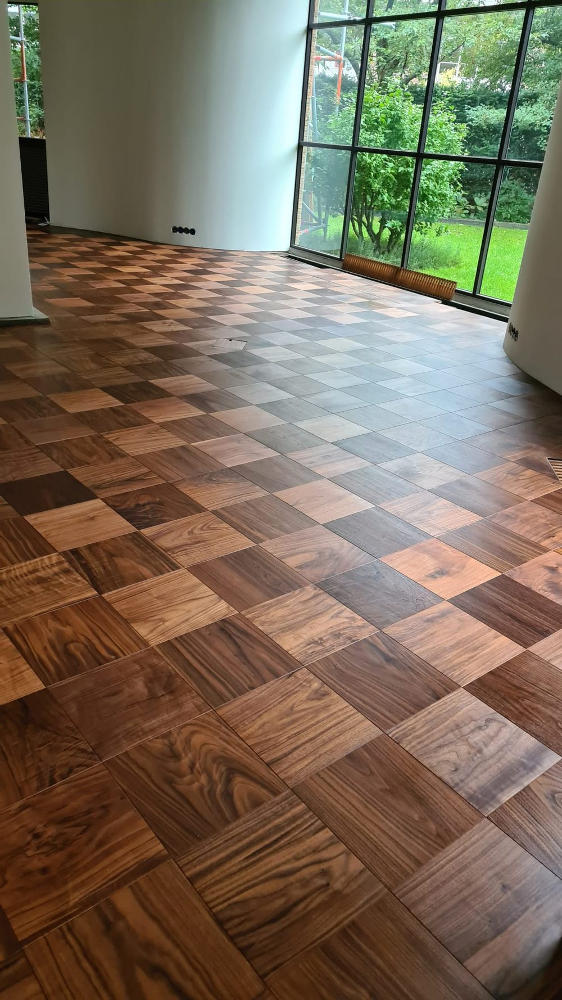
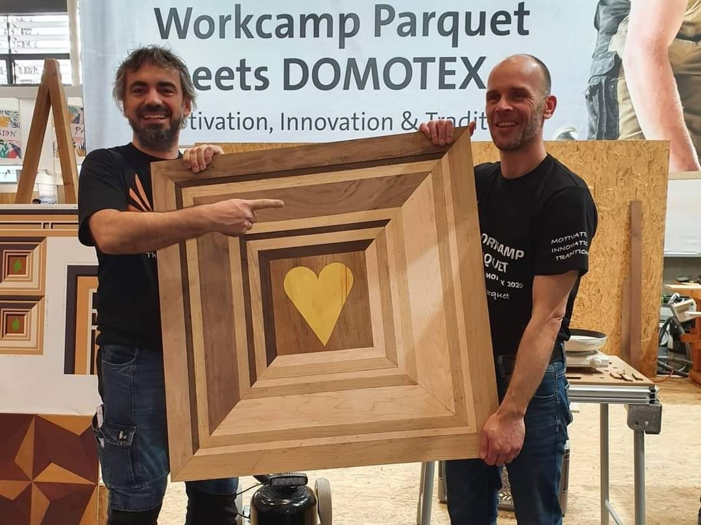
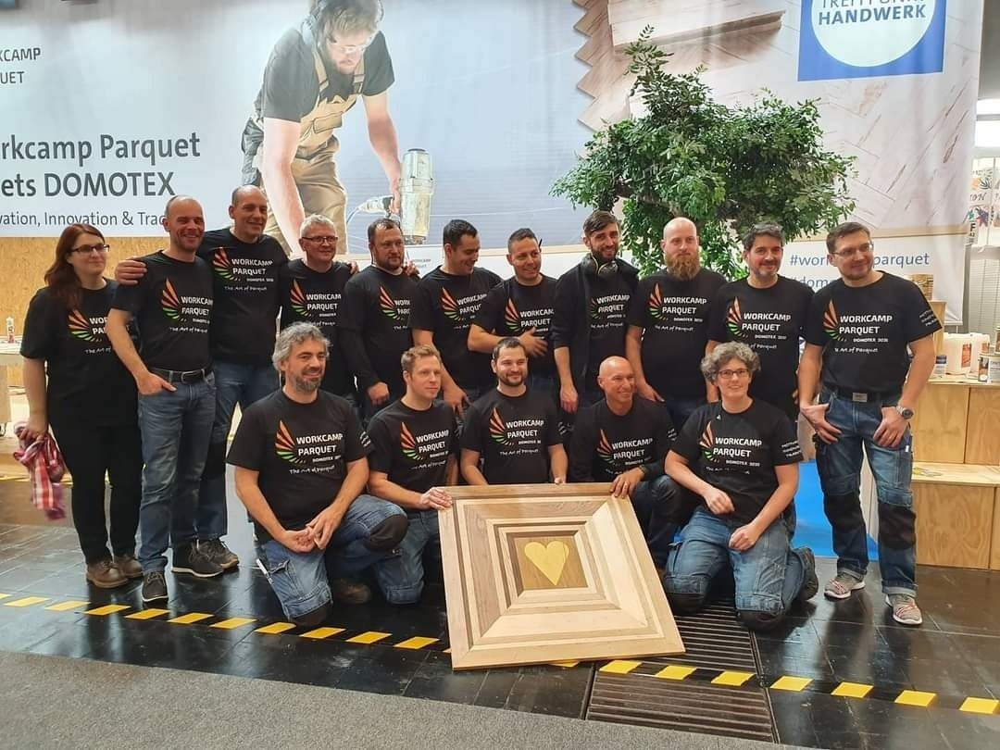

Houten vloeren. Vakkundig gelegd, gerenoveerd en hersteld.
Al 28 jaar werk ik met houten vloeren. Van het leggen van een nieuwe parketvloer tot het volledig renoveren van een bestaande vloer. Geen onnodig ingewikkeld verhaal — gewoon goed kijken naar wat een vloer nodig heeft en zorgen dat het klopt.


Nieuw & maatwerk
Parket & houten vloeren
Een houten vloer moet niet alleen mooi zijn wanneer hij net gelegd is. Hij moet technisch goed opgebouwd zijn en jarenlang meegaan.
- Nieuwe houten vloeren en parket
- Visgraat en Hongaarse punt
- Traditioneel parket
- Maatwerk en bijzondere patronen
- Plinten en afwerking
- Advies over houtsoort, patroon en afwerking
Herstel & onderhoud
Vloerrenovatie & reparatie
Een bestaande houten vloer kan vaak volledig worden hersteld zonder hem te vervangen. Door professioneel en stofvrij te schuren en opnieuw af te werken, verdwijnen beschadigingen, slijtage en oude afwerklagen en krijgt het hout zijn uitstraling terug.
- Stofvrij schuren van houten vloeren
- Opnieuw oliën of lakken
- Kleur aanpassen
- Beschadigingen herstellen
- Plaatselijk repareren of vervangen
- Oude parketvloeren restaureren
Niet iedere vloer hoeft eruit wanneer er iets misgaat. Losliggende delen, kieren of plaatselijke slijtage kunnen vaak gericht worden hersteld. Met 28 jaar ervaring beoordeel ik meestal snel wat er speelt en welke oplossing technisch én financieel verstandig is.

Sinds 1998
met houten vloeren
Sinds 1998 werk ik professioneel met parket en houten vloeren. In die jaren heb ik alles voorbij zien komen: van renovaties en herstelwerk tot complexe maatwerkvloeren en bijzondere patronen.
Die ervaring betekent dat ik niet alleen kijk naar hoe een vloer eruitziet, maar ook naar de ondervloer, de constructie, de houtwerking en de afwerking.
Een mooie vloer begint bij wat je uiteindelijk niet meer ziet.
Gediplomeerd, aangesloten en gecertificeerd:
Een greep uit het werk
Werk in beeld




Is uw houten vloer toe aan renovatie?
Stuur eenvoudig een paar foto's van de vloer via WhatsApp. Vertel erbij wat u wilt laten doen en, indien bekend, om hoeveel vierkante meter het gaat. Dan geef ik vaak al een eerste inschatting van de mogelijkheden.
Liever mailen? Dat kan via gevloerd.nl@gmail.com.